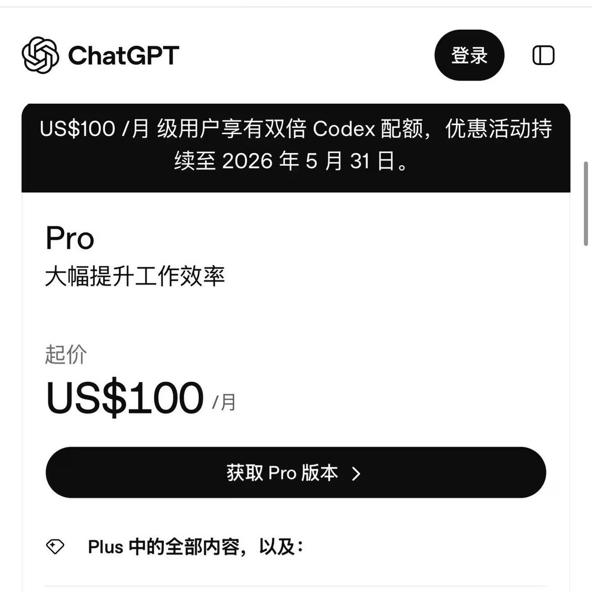

之前推友建议我200刀一半给ChatGPT另一半给Claude，而不是All in梭哈在一家，反而让我这半个月受益匪浅
一开始是接触推特收益分成，报销Cover了我的AI费用，对于欧美那种高工资的环境来说200刀也就2天饭钱，换在国内估计连个公司前台都请不到。得亏国内大部分大中小企业的领导都不知道外面的AI有多强，不然这帮奴隶主估计都想把整个部门开了全换Codex指挥Claude Code产出
AI时代，连胡彦斌都可以独自一人vibe一款应用上架App Store，再让他的粉丝们来消费支持，盈利点不就来了吗？除非实现了技术壁垒，形成了所谓的核心竞争力，不然这些事情AI都能做，甚至还轮不到我来做。
一开始是接触推特收益分成，报销Cover了我的AI费用，对于欧美那种高工资的环境来说200刀也就2天饭钱，换在国内估计连个公司前台都请不到。得亏国内大部分大中小企业的领导都不知道外面的AI有多强，不然这帮奴隶主估计都想把整个部门开了全换Codex指挥Claude Code产出
AI时代，连胡彦斌都可以独自一人vibe一款应用上架App Store，再让他的粉丝们来消费支持，盈利点不就来了吗？除非实现了技术壁垒，形成了所谓的核心竞争力，不然这些事情AI都能做，甚至还轮不到我来做。
